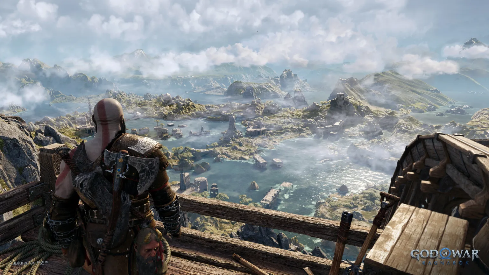

God of War Ragnarök continúa la historia iniciada en la entrega de 2018.
Kratos y su hijo Atreus deben enfrentarse a las consecuencias de sus actos
mientras se aproxima el Ragnarök, el fin del mundo en la mitología nórdica.
La narrativa se centra en la relación entre padre e hijo, explorando temas
como el destino, la responsabilidad y el crecimiento personal. A lo largo
de la aventura, los protagonistas visitan los Nueve Reinos y se enfrentan
a dioses como Thor y Odín.
Jugabilidad y combate
El sistema de combate mantiene la intensidad característica de la saga,
pero introduce nuevas mecánicas y habilidades. Kratos puede utilizar el
Hacha Leviatán, las Espadas del Caos y nuevas armas desbloqueables.
Combate dinámico y estratégico
Habilidades mejoradas para Kratos y Atreus
Enemigos variados con patrones únicos
Jefes finales épicos y desafiantes
Además, Atreus juega un papel más activo en la jugabilidad,
aportando nuevas opciones tácticas durante los combates.
Exploración y diseño del mundo

El juego permite explorar entornos amplios y detallados inspirados
en la mitología nórdica. Cada reino posee una identidad visual propia,
con paisajes que van desde bosques helados hasta regiones volcánicas.
Los jugadores pueden completar misiones secundarias, resolver puzles
ambientales y descubrir secretos ocultos que enriquecen la experiencia.
Aspectos técnicos
God of War Ragnarök aprovecha la potencia de la nueva generación
ofreciendo gráficos en resolución 4K, tasas de hasta 60 FPS y
tiempos de carga reducidos gracias al uso de SSD.
También incorpora sonido 3D envolvente y mejoras en animaciones
faciales, logrando una experiencia cinematográfica.
Recepción y premios
El juego recibió críticas muy positivas por parte de la prensa
especializada y los jugadores, destacando su historia emocional,
su apartado gráfico y su diseño de combate.
Fue nominado y premiado en múltiples ceremonias internacionales,
consolidándose como uno de los títulos más importantes de su generación.